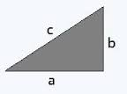

The formula of the perimeter of a triangle is
In this web you can calculate the perimeter of any triangle, you only have to put the dimensions of the sides in the cells

Side A:
Side B:
Side C:
Perimeter:
Back